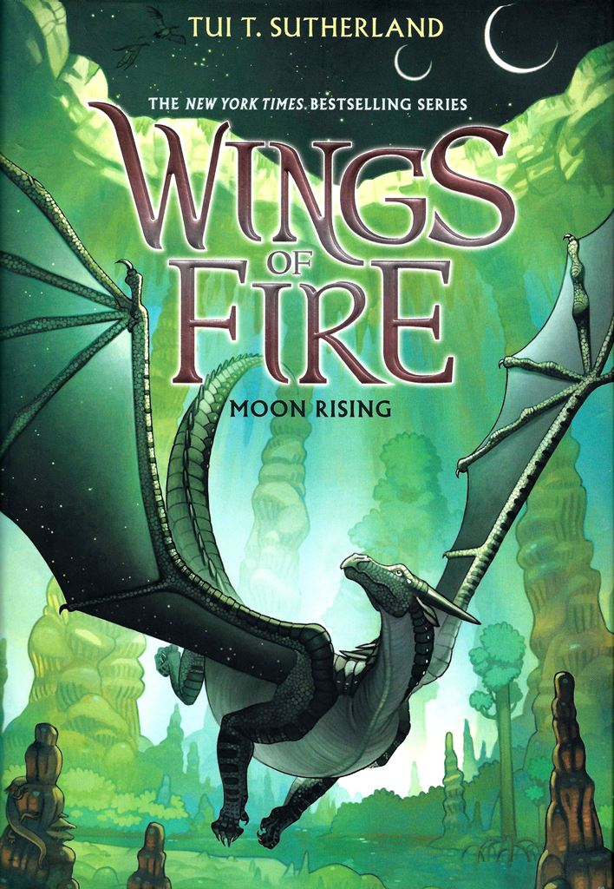

hola, my name is sadee, I am thirteen years old. My favourite colours are blue and light pink. My favourite animal is a horse, but I also like dragons(in books).

My favourite book series is Wings of Fire, and one of my favourite books is The Glass Castle.

I love to cook/bake and I love food, especially ramen noodles, and ice-cream.

I love art but prefer drawing and collageing to painting. However, my favourite type of art is body art, mostly Mehendi Henna. I want to be an actress, model or cosmetologist when I am older.
For now though I just go to school,and do work :( I also volunteer at the library and dogsit for my neighbour.
My mum is from England and my dad is from here, I have three siblings, two brothers, and a sister. Thier names are Lydea, thomas, and Henry. As for pets we currently have four Guinea Pigs, and two mice. However, we used to have six guinea pigs, three mice, a bird, and five fish, at a different time we also had two gerbils, two dogs, a hamster, frogs, and a different mouse.
my favourite people... actors: Tom Holland (my future husband), Timothee Chalamet, Scarlett Johansen, Kevin Hart, Audrey Hepburn, ryan reynolds, besties: janiyah, aggie, katie
I have never really coded before this class, and I'm going to put my things on here. And thats just a little bit (or a lot) about me.